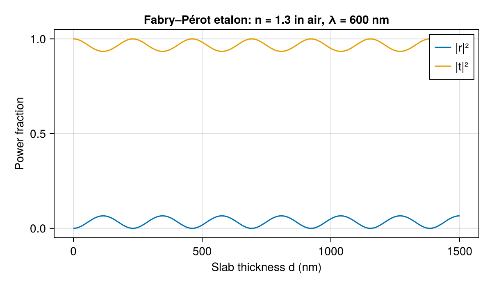

Introduction to RCWA
RCWA solves Maxwell's equations, the fundamental equations governing all electromagnetic phenomena, for structures that are periodic in the plane and layered in depth. A typical use case is a laser beam hitting a diffraction grating: RCWA computes the complex amplitude (magnitude and phase) of every reflected and transmitted diffraction order.
This document builds up the theory in stages. We start with Maxwell's equations in a homogeneous medium, introduce the transfer-matrix method for planar slabs (and its numerical pitfalls), and then show how RCWA generalises the same ideas to periodic structures. A fully worked example of a 1D binary grating ties everything together at the end.
Electromagnetic waves and Maxwell's equations
Light is an electromagnetic wave: oscillating electric and magnetic fields that propagate through space. In a medium with electric permittivity $\varepsilon$ and magnetic permeability $\mu$, and in the absence of free charges and currents, Maxwell's equations read
\[\nabla \cdot (\varepsilon \mathbf{E}) = 0, \qquad \nabla \cdot (\mu \mathbf{H}) = 0,\]
\[\nabla \times \mathbf{E} = -\mu \frac{\partial \mathbf{H}}{\partial t}, \qquad \nabla \times \mathbf{H} = \varepsilon \frac{\partial \mathbf{E}}{\partial t}.\]
Here $\mathbf{E}$ is the electric field and $\mathbf{H}$ is the magnetic field. The material parameters $\varepsilon$ and $\mu$ can vary with position; they describe how strongly the material responds to electric and magnetic fields, respectively. Most optical materials are non-magnetic, meaning $\mu = 1$.
We work with monochromatic light at angular frequency $\omega$. Every field then oscillates at the same frequency, and we may write
\[\mathbf{E}(\mathbf{r}, t) = \mathbf{E}(\mathbf{r})\, e^{-i\omega t}, \qquad \mathbf{H}(\mathbf{r}, t) = \mathbf{H}(\mathbf{r})\, e^{-i\omega t}.\]
When we substitute this into Maxwell's equations the common factor $e^{-i\omega t}$ cancels, and every time derivative $\partial/\partial t$ is replaced by a factor $-i\omega$. The result is the time-harmonic Maxwell equations, which involve only the spatial field profiles $\mathbf{E}(\mathbf{r})$ and $\mathbf{H}(\mathbf{r})$:
\[\nabla \times \mathbf{E} = i\omega\mu\,\mathbf{H}, \qquad \nabla \times \mathbf{H} = -i\omega\varepsilon\,\mathbf{E}.\]
RCWA works entirely in this frequency-domain picture. The Source struct specifies a wavelength $\lambda$, which sets the frequency via $\omega = 2\pi c / \lambda$.
Homogeneous media: reduction to the wave equation
In a homogeneous medium (uniform $\varepsilon$ and $\mu$), the two curl equations above can be combined into a single equation for $\mathbf{E}$ alone. Take the curl of the first equation:
\[\nabla \times (\nabla \times \mathbf{E}) = i\omega\mu \, \nabla \times \mathbf{H} = i\omega\mu \, (-i\omega\varepsilon\,\mathbf{E}) = \omega^2 \varepsilon\mu \, \mathbf{E}.\]
Using the vector identity $\nabla \times (\nabla \times \mathbf{E}) = -\nabla^2 \mathbf{E}$ (valid because $\nabla \cdot \mathbf{E} = 0$ in a source-free homogeneous medium), this becomes the vector wave equation:
\[\nabla^2 \mathbf{E} + \varepsilon\mu\,\omega^2\,\mathbf{E} = 0.\]
The simplest solutions are plane waves:
\[\mathbf{E}(\mathbf{r}) = \mathbf{E}_0 \, e^{i\mathbf{k}\cdot\mathbf{r}},\]
where $\mathbf{k} = (k_x, k_y, k_z)$ is the wave vector, which points in the direction the wave travels.
The refractive index
The vector wave equation relates the magnitude of the wave vector to the wavelength:
\[|\mathbf{k}| = \frac{2\pi n}{\lambda}, \qquad n = \sqrt{\varepsilon\mu},\]
where $n$ is the refractive index of the material. In general $n$ is a complex number: $n = n' + in''$. The real part $n'$ determines the wavelength inside the material (a higher $n'$ means a shorter wavelength, so $|\mathbf{k}|$ is larger). The imaginary part $n''$ describes absorption: substituting a complex $n$ into the plane wave gives
\[e^{i k z} = e^{i (2\pi n / \lambda) z} = e^{-2\pi n'' z / \lambda} \, e^{i 2\pi n' z / \lambda}.\]
The first factor is an exponential decay: the wave loses amplitude as it propagates, because the material absorbs energy. A transparent material like glass has $n'' \approx 0$; a metal or semiconductor can have a sizeable $n''$.
To give a sense of scale, here are approximate refractive indices of a few familiar materials at visible wavelengths ($\lambda \approx 550\,\text{nm}$):
| Material | $n'$ (real part) | $n''$ (imaginary part) | Character |
|---|---|---|---|
| Air | 1.0 | $\approx 0$ | Transparent, no refraction |
| Water | 1.3 | $\approx 0$ | Transparent, mild bending |
| Glass | 1.5 | $\approx 0$ | Transparent, moderate bending |
| Silicon | 4.1 | 0.04 | High index, slightly lossy |
| Aluminium | 0.9 | 6.5 | Metallic, highly absorbing |
| Gold | 0.3 | 2.9 | Metallic, highly absorbing |
Evanescent waves
Recall the relation $|\mathbf{k}|^2 = (2\pi n/\lambda)^2$ between the wave vector and the wavelength. Writing out the components of this relation gives the dispersion relation:
\[k_x^2 + k_y^2 + k_z^2 = \varepsilon\mu\left(\frac{2\pi}{\lambda}\right)^2.\]
So once the in-plane components $(k_x, k_y)$ are known, $k_z$ is fixed up to a sign (which determines whether the wave is going up or down):
\[k_z = \pm\sqrt{\varepsilon\mu\left(\frac{2\pi}{\lambda}\right)^2 - k_x^2 - k_y^2}.\]
When $k_x^2 + k_y^2$ exceeds $\varepsilon\mu\,(2\pi/\lambda)^2$, the quantity under the square root becomes negative, making $k_z$ purely imaginary. A plane wave with imaginary $k_z$ doesn't oscillate in the z-direction; instead its amplitude decays exponentially:
\[e^{ik_z z} = e^{-|k_z|\,z} \qquad \text{(for imaginary } k_z\text{)}.\]
Such a wave is called evanescent. Evanescent fields are real — they exist as decaying electromagnetic fields near a surface — but they carry no time-averaged power in the z-direction and die off within a fraction of a wavelength. Only propagating waves (those with real $k_z$) appear as actual beams at a distant detector.
To make this concrete, set $\lambda = 1$ and $n = 1$, and consider the $(x, z)$-plane for simplicity. The dispersion relation becomes $k_x^2 + k_z^2 = (2\pi)^2$. A wave travelling to the right has $k_x = 2\pi$ and $k_z = 0$:
\[E(x) = e^{i\,2\pi\,x}.\]
This is a propagating wave: it oscillates with one full cycle per unit length, which is exactly the wavelength. A wave at 45° has $k_x = k_z = \sqrt{2}\,\pi$: it oscillates in both x and z but still propagates.
But what if $k_x = 4\pi$ — twice the free-space wavenumber? Then $k_z = \sqrt{(2\pi)^2 - (4\pi)^2} = i\,2\sqrt{3}\,\pi$, and the field becomes
\[E(x,z) = e^{i\,4\pi\,x}\;e^{-2\sqrt{3}\,\pi\,z}.\]
This wave oscillates rapidly in x but decays exponentially in z. It cannot exist on its own in unbounded empty space: the solution decays in one z-direction but blows up in the other, so it only makes physical sense when a surface is present to cut off the divergent side. A diffraction grating will turn out to allow for this situation: a periodic grating of periodicity $\Lambda$ allows you to add multiples of $2\pi/\Lambda$ to $k_x$, and when $k_x$ is big enough, the corresponding diffraction order becomes evanescent, decaying away from the grating surface. We will see this happen explicitly in the grating example later.
The transfer-matrix method for layered media
Before tackling periodic structures, it is instructive to study the simpler problem of light propagating through a stack of homogeneous slabs. This is the domain of the transfer-matrix method (TMM).
Setting up the problem
Consider a planar structure consisting of several layers stacked in the z-direction. Each layer $j$ has refractive index $n_j$ and thickness $d_j$. The top and bottom media are semi-infinite (half-spaces). A plane wave with in-plane wave vector $(k_x, k_y)$ impinges on the stack from above.
incoming light
↓
medium 0 (n0) semi-infinite
─────────────────────────────────
layer 1 (n1) d₁
─────────────────────────────────
layer 2 (n2) d₂
─────────────────────────────────
⋮ ⋮
─────────────────────────────────
medium N (nN) semi-infiniteInside each homogeneous layer, the field is a superposition of two plane waves: one propagating (or decaying) in the $+z$ direction with amplitude $a_j$, and one in the $-z$ direction with amplitude $b_j$. The z-component of the wave vector in layer $j$ is
\[k_{z,j} = \pm \sqrt{n_j^2 \left(\frac{2\pi}{\lambda}\right)^2 - k_x^2 - k_y^2}.\]
The challenge is to relate the amplitudes in the topmost medium to those in the bottommost medium, given the boundary conditions at every interface.
Boundary conditions and interface matrices
At each interface, Maxwell's equations demand that the tangential components of $\mathbf{E}$ and $\mathbf{H}$ are continuous. In the special case that $k_x = k_y = 0$ (in other words, the incoming light is at normal incidence), these conditions at the interface between layers $j$ and $j+1$ can be expressed as a relation
\[\begin{pmatrix} a_{j+1} \\ b_{j+1} \end{pmatrix} = D_{j,j+1} \begin{pmatrix} a_j \\ b_j \end{pmatrix},\]
between the amplitudes $a_j$ and $a_{j+1}$ of the forward plane waves, and the amplitudes $b_j$ and $b_{j+1}$ of the backward plane waves. Here, $D_{j,j+1}$ is the interface matrix
\[D_{j,j+1} = \frac{1}{2} \begin{pmatrix} 1 + n_j/n_{j+1} & 1 - n_j/n_{j+1} \\ 1 - n_j/n_{j+1} & 1 + n_j/n_{j+1} \end{pmatrix}.\]
For oblique incidence, there's a more complicated equation, which moreover depends on the polarization of the incoming light, but the principle underlying it is the same. For s-polarization (electric field perpendicular to the plane of incidence), the interface matrix between layers $j$ and $j+1$ is
\[D_{j,j+1}^{(s)} = \frac{1}{2} \begin{pmatrix} 1 + k_{z,j}/k_{z,j+1} & 1 - k_{z,j}/k_{z,j+1} \\ 1 - k_{z,j}/k_{z,j+1} & 1 + k_{z,j}/k_{z,j+1} \end{pmatrix}\]
where $k_{z,j}$ and $k_{z,j+1}$ are the $z$-components of the wave vector in layers $j$ and $j+1$. For p-polarization (magnetic field perpendicular to the plane of incidence), the interface matrix is
\[D_{j,j+1}^{(p)} = \frac{1}{2} \begin{pmatrix} 1 + n_{j+1}^2\,k_{z,j}/n_j^2\,k_{z,j+1} & 1 - n_{j+1}^2\,k_{z,j}/n_j^2\,k_{z,j+1} \\ 1 - n_{j+1}^2\,k_{z,j}/n_j^2\,k_{z,j+1} & 1 + n_{j+1}^2\,k_{z,j}/n_j^2\,k_{z,j+1} \end{pmatrix}.\]
Propagation matrices
The interface matrix relates amplitudes on the two sides of a boundary. But to get from one boundary to the next, the wave must also travel through the interior of a layer. During this traversal, the forward wave (of amplitude $a_j$) picks up a phase $e^{ik_{z,j} d_j}$ and the backward wave (of amplitude $b_j$) picks up $e^{-ik_{z,j} d_j}$. This is captured by the propagation matrix:
\[P_j = \begin{pmatrix} e^{ik_{z,j}\,d_j} & 0 \\ 0 & e^{-ik_{z,j}\,d_j} \end{pmatrix}.\]
The global transfer matrix
The so-called global transfer matrix of the stack is obtained by multiplying interface and propagation matrices from top to bottom:
\[T = D_{N-1,N} \, P_{N-1} \, D_{N-2,N-1} \, \cdots \, P_1 \, D_{0,1}.\]
The global transfer matrix $T$ relates the amplitudes in the bottom medium to those in the top medium:
\[\begin{pmatrix} a_N \\ b_N \end{pmatrix} = T \begin{pmatrix} a_0 \\ b_0 \end{pmatrix}.\]
Setting $b_N = 0$ (no upward wave in the substrate) and $a_0 = 1$ (unit incident amplitude), the reflection coefficient and transmission coefficient are
\[r = \frac{b_0}{a_0} = -\frac{T_{21}}{T_{22}}, \qquad t = \frac{a_N}{a_0} = T_{11} - T_{12}\,\frac{T_{21}}{T_{22}}.\]
These are complex numbers. Their magnitude indicate the fraction of electric field amplitude that gets reflected resp. transmitted; their phase tells you how much the reflected and transmitted waves are shifted relative to the incident wave.
Example: Fabry–Pérot etalon
A Fabry–Pérot etalon is a single slab of material (refractive index $n_f$; thickness $d$) sandwiched between two identical media (refractive index $n_0$).
incoming light
↓
medium 0 (n0) semi-infinite
─────────────────────────────────
film (nf) d
─────────────────────────────────
medium 0 (n0) semi-infiniteAt normal incidence the full transfer matrix is $T = D_{f,0}\,P_f\,D_{0,f}$. Carrying out the algebra gives
\[T_{11} = \left(\cos\delta - \frac{i}{2}\left(\frac{n_0}{n_f} + \frac{n_f}{n_0}\right)\sin\delta\right) e^{-i \delta},\]
\[T_{21} = -\frac{i}{2}\left(\frac{n_0}{n_f} - \frac{n_f}{n_0}\right) \sin\delta \; e^{i\delta},\]
where
\[\delta = \frac{2\pi n_f d}{\lambda}.\]
This yields reflection and transmission coefficients
\[r = \frac{r_{01}(1 - e^{2i\delta})}{1 - r_{01}^2\,e^{2i\delta}}, \qquad t = \frac{(1 - r_{01}^2)\,e^{i\delta}}{1 - r_{01}^2\,e^{2i\delta}},\]
where $r_{01} = (n_0 - n_f)/(n_0 + n_f)$ is the Fresnel reflection coefficient of a single interface. These are exactly the standard Fabry–Pérot (Airy) formulae.
As an example, consider a glass slab ($n_f = 1.3$) in air at $\lambda = 600\,\text{nm}$ and plot $|r|^2$ and $|t|^2$ as a function of slab thickness:
using CairoMakie
n0, nf = 1.0, 1.3
r01 = (n0 - nf) / (n0 + nf)
λ = 600.0 # nm
d = range(0, 1500, length=500)
δ = @. 2π * nf * d / λ
r = @. r01 * (1 - exp(2im * δ)) / (1 - r01^2 * exp(2im * δ))
t = @. (1 - r01^2) * exp(im * δ) / (1 - r01^2 * exp(2im * δ))
fig = Figure(size=(600, 350))
ax = Axis(fig[1, 1], xlabel="Slab thickness d (nm)", ylabel="Power fraction",
title="Fabry–Pérot etalon: n = $nf in air, λ = $(Int(λ)) nm")
lines!(ax, d, abs2.(r), label="|r|²")
lines!(ax, d, abs2.(t), label="|t|²")
axislegend(ax, position=:rt)
fig
The reflectance oscillates between zero (at the resonances $d = m\lambda/(2n_f)$, where the round-trip phase is a multiple of $2\pi$) and a maximum of about 6.6%. (Lithography folks like to call this a swing curve.) The transmittance does the opposite, reaching unity at every resonance. Because the index contrast is modest ($r_{01} \approx -0.13$), the oscillations are gentle; a higher-contrast film would show sharper dips and peaks.
Numerical instability of transfer matrices
The transfer-matrix method has a serious numerical flaw. Look at the propagation matrix again:
\[P_j = \begin{pmatrix} e^{ik_{z,j}\,d_j} & 0 \\ 0 & e^{-ik_{z,j}\,d_j} \end{pmatrix}.\]
When $k_{z,j}$ is imaginary (an evanescent wave), one of these exponentials grows while the other decays. For a thick layer the growing exponential can be astronomically large. When you multiply transfer matrices together, you are mixing information about growing and decaying waves in the same matrix. This means that tiny rounding errors in the decaying component get amplified by the enormous growing component, and the final answer is overwhelmed by numerical noise.
To see this in practice, consider a setting in which light inside glass hits a thin air gap. If the light hits the glass/air interface at an angle beyond the critical angle, the field in the air gap is evanescent. But if the air gap is sufficiently thin, some of the light will tunnel through anyway. This phenomenon is also known as frustrated total internal reflection (FTIR).
Let's implement the transfer-matrix method and see what happens as the gap grows. We assume that the incoming light is s-polarized.
function interface_matrix(kz_a, kz_b)
η = kz_a / kz_b
return [0.5*(1 + η) 0.5*(1 - η); 0.5*(1 - η) 0.5*(1 + η)]
end
function propagation_matrix(kz, d)
ϕ = kz * d
return [exp(im*ϕ) 0; 0 exp(-im*ϕ)]
end
function tmm(kz_layers, d_internal)
T = interface_matrix(kz_layers[1], kz_layers[2])
for j in eachindex(d_internal)
T = propagation_matrix(kz_layers[j+1], d_internal[j]) * T
T = interface_matrix(kz_layers[j+1], kz_layers[j+2]) * T
end
r = -T[2,1] / T[2,2]
t = T[1,1] - T[1,2] * T[2,1] / T[2,2]
return r, t
end
λ = 532.0
k0 = 2π / λ
n_glass, n_air = 1.5, 1.0
θ = π / 4 # 45°, inside the glass (critical angle ≈ 42°)
kx = n_glass * k0 * sin(θ)
kz_glass = sqrt(Complex(n_glass^2 * k0^2 - kx^2))
kz_air = sqrt(Complex(n_air^2 * k0^2 - kx^2))
using Printf
println("kz in air: ", round(kz_air, sigdigits=4), " (imaginary ⟹ evanescent)")
println()
for d in [0.1, 1.0, 10.0, 60.0, 1000.0] .* λ
r, t = tmm([kz_glass, kz_air, kz_glass], [d])
R, T_power = abs2(r), abs2(t)
@printf("d = %6.1fλ: R = %8.6f, T = %8.6f, R+T = %8.6f\n", d/λ, R, T_power, R + T_power)
endkz in air: 0.0 + 0.004176im (imaginary ⟹ evanescent)
d = 0.1λ: R = 0.122305, T = 0.877695, R+T = 1.000000
d = 1.0λ: R = 0.982953, T = 0.017047, R+T = 1.000000
d = 10.0λ: R = 1.000000, T = 0.000000, R+T = 1.000000
d = 60.0λ: R = 1.000000, T = 971334446112864535459730953411759453321203419526069760625906204869452142602604249088.000000, R+T = 971334446112864535459730953411759453321203419526069760625906204869452142602604249088.000000
d = 1000.0λ: R = NaN, T = NaN, R+T = NaNFor a thin gap ($d = 0.1\lambda$), the tunnelling is significant and $R + T = 1$ as it should. As $d$ increases, the transmitted power should become neglibly small, so $R \approx 1$ and $T \approx 0$. At $d = 10\lambda$, that's indeed what we're seeing, but when we increase $d$ to $60\lambda$, we start to get nonsensical values: energy conservation is violated because the growing exponential $e^{|k_z|\,d}$ has overwhelmed the floating-point representation.
Scattering matrices: the stable alternative
The cure is to reformulate the problem in terms of scattering matrices (S-matrices). Instead of relating amplitudes on one side of a layer to amplitudes on the other side (mixing forward and backward waves), an S-matrix relates incoming amplitudes (from both sides) to outgoing amplitudes. Recall that $a_j$ is the downward-propagating ($+z$) amplitude and $b_j$ is the upward-propagating ($-z$) amplitude in layer $j$. While the global transfer matrix is defined by
\[\begin{pmatrix} a_N \\ b_N \end{pmatrix} = T \begin{pmatrix} a_0 \\ b_0 \end{pmatrix},\]
the global S-matrix is instead defined by
\[\begin{pmatrix} b_0 \\ a_N \end{pmatrix} = S \begin{pmatrix} a_0 \\ b_N \end{pmatrix}.\]
It is conventional to decompose the S-matrix into the block matrix
\[S = \begin{pmatrix} S_{11} & S_{12} \\ S_{21} & S_{22} \end{pmatrix}.\]
Here $S_{11}$ is the reflection matrix (top side) and $S_{21}$ is the transmission matrix (top to bottom), so the quantities we want are immediately available as $r = S_{11}$ and $t = S_{21}$ (when $b_N = 0$).
Why are S-matrices stable? The key property is that they never need to represent the growing exponential explicitly. In the S-matrix picture, the phase factors $e^{ik_{z,j} d_j}$ always appear as decaying exponentials on the appropriate outgoing wave, which means every intermediate number stays bounded.
One mathematical price we pay is that, while transfer matrices could simply be multiplied, cascading the S-matrices of consecutive layers instead requires the use of the Redheffer star product:
\[S_{11} = S^{(A)}_{11} + S^{(A)}_{12}\,F\,S^{(B)}_{11}\,S^{(A)}_{21}, \qquad S_{12} = S^{(A)}_{12}\,F\,S^{(B)}_{12},\]
\[S_{21} = S^{(B)}_{21}\,G\,S^{(A)}_{21}, \qquad S_{22} = S^{(B)}_{22} + S^{(B)}_{21}\,G\,S^{(A)}_{22}\,S^{(B)}_{12},\]
where $F = (I - S^{(B)}_{11}\,S^{(A)}_{22})^{-1}$ and $G = (I - S^{(A)}_{22}\,S^{(B)}_{11})^{-1}$ account for the infinite series of multiple reflections between the two subsystems.
The star product is associative, so scattering matrices for any number of layers can be cascaded sequentially. This is exactly what RCWA does: each layer's S-matrix is computed individually, and then they are combined via the Redheffer star product to obtain the global S-matrix of the entire stack.
Revisiting our examples with CasualRCWA
Fabry–Pérot etalon
Earlier we derived the Fabry–Pérot reflection and transmission coefficients analytically using the transfer-matrix method. Let's verify those results with CasualRCWA and see how the analytical quantities map onto the simulation output.
The structure is the same as before: a film of glass ($n_f = 1.3$, thickness $d = 500\,\text{nm}$) in air, at normal incidence. With only the zeroth harmonic, RCWA reduces to the exact same physics as the transfer-matrix method, but using scattering matrices under the hood.
using CasualRCWA
using Printf
n_air = 1.0 - 0.0im
n_film = 1.3 - 0.0im
d = 500.0 # nm
r01 = (n_air - n_film) / (n_air + n_film)
for λ in [400.0, 433.0, 500.0, 532.0, 600.0, 650.0, 800.0]
# Analytical
δ = 2π * 1.3 * d / λ
r_an = r01 * (1 - exp(2im * δ)) / (1 - r01^2 * exp(2im * δ))
# RCWA
source = Source(λ)
stack = Stack(
[Layer(n_air), Layer(n_film), Layer(n_air)],
[Inf, d, Inf],
(1000.0, 1000.0) # period is arbitrary
)
output = RCWA(RCWAInput(source, stack, (0, 0)))
r_x, _ = reflection_coefficients(output)
@printf("λ = %3d nm: |r|² analytical = %8.6f, |r|² RCWA = %8.6f\n", Int(λ), abs2(r_an), abs2(r_x[1,1]))
endλ = 400 nm: |r|² analytical = 0.034017, |r|² RCWA = 0.034017
λ = 433 nm: |r|² analytical = 0.000004, |r|² RCWA = 0.000004
λ = 500 nm: |r|² analytical = 0.059889, |r|² RCWA = 0.059889
λ = 532 nm: |r|² analytical = 0.063882, |r|² RCWA = 0.063882
λ = 600 nm: |r|² analytical = 0.017303, |r|² RCWA = 0.017303
λ = 650 nm: |r|² analytical = 0.000000, |r|² RCWA = 0.000000
λ = 800 nm: |r|² analytical = 0.056706, |r|² RCWA = 0.056706The match is exact to machine precision.
We can also inspect the full set of quantities that CasualRCWA provides for a single wavelength:
source = Source(532.0)
stack = Stack(
[Layer(n_air), Layer(n_film), Layer(n_air)],
[Inf, d, Inf],
(1000.0, 1000.0)
)
output = RCWA(RCWAInput(source, stack, (0, 0)))
r_x, _ = reflection_coefficients(output)
t_x, _ = transmission_coefficients(output)
DE_ref, DE_trn = diffraction_efficiencies(output)
@printf("Complex reflection coefficient: r = %9.6f%+9.6fi\n", real(r_x[1,1]), imag(r_x[1,1]))
@printf("Complex transmission coefficient: t = %9.6f%+9.6fi\n", real(t_x[1,1]), imag(t_x[1,1]))
println()
@printf("|r|² = %10.6f\n", abs2(r_x[1,1]))
@printf("|t|² = %10.6f\n", abs2(t_x[1,1]))
println()
@printf("Diffraction efficiency (reflection): %8.6f\n", DE_ref[1,1])
@printf("Diffraction efficiency (transmission): %8.6f\n", DE_trn[1,1])
@printf("Sum: %8.6f\n", DE_ref[1,1] + DE_trn[1,1])Complex reflection coefficient: r = -0.249048-0.043096i
Complex transmission coefficient: t = 0.164974-0.953363i
|r|² = 0.063882
|t|² = 0.936118
Diffraction efficiency (reflection): 0.063882
Diffraction efficiency (transmission): 0.936118
Sum: 1.000000Because both half-spaces are the same material (air), the diffraction efficiency equals $|r|^2$ and $|t|^2$ directly; the $k_z$ correction factor is the same for the incident and scattered waves. For structures where the top and bottom media differ, the efficiency is not simply the squared magnitude of the coefficient.
Frustrated total internal reflection
When light inside glass hits a glass/air interface at a large enough angle, evanescent waves form within the air. If the slab of air is sufficiently thin, some of those waves make it to the other side.
Earlier, we had seen that transfer matrices become numerically unstable when we increase the thickness of the slab of air. S-matrices, in contrast, manage to entirely avoid this numerical instability. Since CasualRCWA uses scattering matrices internally, it should handle this problem without difficulty:
using CasualRCWA
n_glass = 1.5 - 0.0im
n_air = 1.0 - 0.0im
source = Source(0.0, π/4, 532.0) # 45° elevation
for d in [0.1, 1.0, 10.0, 60.0, 1000.0] .* 532.0
stack = Stack(
[Layer(n_glass), Layer(n_air), Layer(n_glass)],
[Inf, d, Inf],
(10000.0, 10000.0) # period is arbitrary; only the zeroth order matters
)
output = RCWA(RCWAInput(source, stack, (0, 0)))
DE_ref, DE_trn = diffraction_efficiencies(output; polarization = :y)
R, T_power = sum(DE_ref), sum(DE_trn)
@printf("d = %6.1fλ: R = %8.6f, T = %8.6f, R+T = %8.6f\n", d/532, R, T_power, R + T_power)
endd = 0.1λ: R = 0.122305, T = 0.877695, R+T = 1.000000
d = 1.0λ: R = 0.982953, T = 0.017047, R+T = 1.000000
d = 10.0λ: R = 1.000000, T = 0.000000, R+T = 1.000000
d = 60.0λ: R = 1.000000, T = 0.000000, R+T = 1.000000
d = 1000.0λ: R = 1.000000, T = 0.000000, R+T = 1.000000Energy is conserved at every thickness. For the thick gaps where the transfer-matrix method overflowed, the S-matrix approach correctly finds $R \approx 1$ and $T \approx 0$.
Extension to RCWA: periodic structures in Fourier space
Fourier space and diffraction orders
A periodic structure repeats itself with some period $\Lambda$. Fourier's theorem says that any periodic function can be decomposed into a sum of sines (harmonics): the first oscillates once per period, the second twice, and so on.
When a plane wave hits a periodic structure, Maxwell's equations in Fourier space form a linear differential system with periodic spatial coefficients. Floquet theory predicts that every solution to such a system may be written as a plane-wave phase factor multiplied by a periodic function.
Let's see what that means concretely. We'll consider the 1D case for notational simplicity. Suppose light encounters 1D grating with period $\Lambda$, so that $\varepsilon(x + \Lambda) = \varepsilon(x)$. The electric field satisfies the wave equation with this periodic dielectric. Floquet theory asserts that the solution must have the form
\[E(x, z) = e^{i k_x x} \sum_{n=-\infty}^{\infty} E_n(z)\, e^{i n (2\pi/\Lambda) x},\]
where $k_x$ is the in-plane wave vector of the incident wave. Each term in the sum represents a diffraction order whose in-plane wave vector is
\[k_{x,n} = k_x + n\,\frac{2\pi}{\Lambda}.\]
Maxwell's equations in Fourier space thus enforce a powerful general constraint. Scattered light can only contain waves whose in-plane wave vectors differ from the incident wave vector by integer multiple of the grating vector $2\pi / \Lambda$. The periodicity of the structure forces the field to be a superposition of plane waves at these discrete wave vector values; no other wave vectors are allowed. Light in periodic stuctures will therefore always produce discrete beams rather than a continuum of scattered light.
Maxwell's equations in Fourier space
In the transfer-matrix method, each layer is homogeneous, so the forward and backward plane waves decouple, thus producing a $2 \times 2$ problem per polarization. In RCWA, the layers can be patterned: $\varepsilon$ and $\mu$ vary periodically within the plane. This spatial variation couples different Fourier harmonics to each other.
Concretely, the $\varepsilon(x,y)$ and $\mu(x,y)$ profiles of a patterned layer are each expanded into a Fourier series. Maxwell's curl equations involve products like $\varepsilon(x,y)\,E(x,y)$. In real space this is pointwise multiplication, but in Fourier space multiplication becomes convolution: the Fourier coefficient of the product at harmonic $n$ is
\[(\varepsilon \cdot E)_n = \sum_m \hat\varepsilon_{n-m}\, \hat E_m.\]
This is exactly a matrix-vector product: if we collect the Fourier coefficients $\hat E_m$ into a vector $\mathbf{E}$ and arrange the $\hat\varepsilon_{n-m}$ into a matrix (a Toeplitz or convolution matrix $\llbracket\varepsilon\rrbracket$), then $\varepsilon \cdot E \;\to\; \llbracket\varepsilon\rrbracket\,\mathbf{E}$ in Fourier space. The same applies to $\mu$.
After this Fourier substitution, the time-harmonic Maxwell equations become a set of coupled ODEs in $z$:
\[\frac{d\mathbf{H}}{dz} = Q\,\mathbf{E}, \qquad \frac{d\mathbf{E}}{dz} = P\,\mathbf{H},\]
where $\mathbf{E}$ and $\mathbf{H}$ are now vectors of Fourier coefficients (one entry per harmonic per polarization). The matrices $P$ and $Q$ are built from the convolution matrices $\llbracket\varepsilon\rrbracket$, $\llbracket\mu\rrbracket$ and the diagonal matrices of in-plane wave vectors $k_{x,n}$, $k_{y,m}$. In a homogeneous layer the convolution matrices reduce to scalars ($\varepsilon$ and $\mu$ have only a zeroth Fourier coefficient), and $P$, $Q$ become diagonal, recovering the uncoupled plane-wave picture of the transfer-matrix method.
Eliminating $\mathbf{H}$ gives a second-order equation for $\mathbf{E}$:
\[\frac{d^2\mathbf{E}}{dz^2} = \Omega^2\,\mathbf{E}, \qquad \Omega^2 = P\,Q.\]
This looks just like the wave equation $\nabla^2 E = -\varepsilon\mu\,\omega^2 E$ that we had in a homogeneous medium, except that the scalar $\varepsilon\mu$ has been replaced by a matrix $\Omega^2$.
Eigenmodes
The general solution of the matrix wave equation is expressed in terms of the eigenmodes of $\Omega^2$. An eigenmode is a specific superposition of Fourier harmonics that propagates through the layer without changing shape: it only picks up an overall phase or amplitude factor as it traverses the layer.
The eigenvectors of $\Omega^2$ form the electric mode matrix $W$ (called electricModes in the CasualRCWA code). Each column of $W$ is one mode. The corresponding eigenvalue $\lambda_n$ (the square root of the $\Omega^2$ eigenvalue) determines how that mode evolves in $z$:
- Propagating modes have purely imaginary $\lambda_n$. They accumulate phase $\exp(-2\pi d\,\lambda_n / \lambda_0)$ across a layer of thickness $d$; the field oscillates but doesn't grow or shrink.
- Evanescent modes have real $\lambda_n$. They decay exponentially and carry no energy in the far field.
The magnetic mode matrix $V$ (called magneticModes) is derived from $W$ via $V = Q \,W \,\Lambda^{-1}$, where $\Lambda$ is the diagonal matrix of eigenvalues.
In a homogeneous layer, the eigenmodes are trivial: each Fourier harmonic propagates independently, so $W = I$ (the identity matrix) and the eigenvalues follow from the scalar dispersion relation. This is the exact analogue of the $2 \times 2$ problem in the transfer-matrix method, except now there is one mode per harmonic per polarization.
In a patterned layer, the off-diagonal entries of the convolution matrices couple the harmonics. The eigenmodes are then superpositions of several harmonics, and finding them requires solving a matrix eigenvalue problem — a core computational step of RCWA.
Boundary matching and the global scattering matrix
At each interface between layers, the tangential components of $\mathbf{E}$ and $\mathbf{H}$ must be continuous. These boundary conditions connect the eigenmode amplitudes in adjacent layers, and are encoded in scattering matrices that relate incoming to outgoing wave amplitudes.
Just as in the transfer-matrix method, the individual layer S-matrices are cascaded through the stack, using the Redheffer star product described earlier. The resulting global S-matrix maps the incident wave to reflected and transmitted amplitudes for every diffraction order simultaneously.
Extracting physical quantities
The global S-matrix $S$ of the full stack relates the incident amplitude vector to reflected and transmitted amplitude vectors. From these you can compute:
- Complex field coefficients: the amplitude and phase of every diffraction order (via
reflection_coefficientsandtransmission_coefficients). - Diffraction efficiencies: the fraction of incident power going into each order (via
diffraction_efficiencies).
Example: 1D binary grating
Let's work through a concrete example to see how all of these concepts come together.
The structure
We consider a binary grating: a slab of material where one half of each period is silicon ($n = 4$) and the other half is air ($n = 1$). The grating sits on a silicon substrate and is illuminated from above (from air) at normal incidence, with wavelength $\lambda = 532\,\text{nm}$. The grating period is $\Lambda = 400\,\text{nm}$ and the grating depth is $200\,\text{nm}$.
incoming light (λ = 532 nm)
↓
┌─────────────────────────────────────┐
│ air (n=1) │ top half-space
├──────────────────┬──────────────────┤
│ silicon (n=4) │ air (n=1) │ grating layer (200 nm)
├──────────────────┴──────────────────┤
│ silicon (n=4) │ substrate
└─────────────────────────────────────┘
←─── 400 nm ───→Setting up the simulation
using CasualRCWA
using LinearAlgebra
using Printf
n_Si = 4.0 - 0.0im
n_air = 1.0 - 0.0im
# A 50% duty cycle 1D grating: left half silicon, right half air.
grating = [n_Si n_air]
source = Source(532.0) # Normal incidence; λ = 532 nm
N, M = 5, 0 # Orders -5..+5 in X, order 0 in Y
depth = 200.0 # Grating depth
stack = Stack(
[Layer(n_air), Layer(grating), Layer(n_Si)], # Layers
[Inf, depth, Inf], # Thicknesses
(400.0, 100.0) # Period: 400 nm in X
)
output = RCWA(RCWAInput(source, stack, (N, M)))A few things to note:
[n_Si n_air]is a $1 \times 2$ matrix. There is no need for a high-resolution grid; the package computes exact Fourier coefficients regardless of the pixel count.- The Y-period (100 nm) is arbitrary since there is no patterning in Y.
(5, 0)means we include harmonics $-5$ to $+5$ in X and only the zeroth harmonic in Y.
A remark about signs
The exposition above uses the standard sign convention found in optics textbooks, in which z points up, and the refractive index has $\operatorname{Im}(n) > 0$. In contrast, CasualRCWA uses the negative sign convention. Waves travel down, and the imaginary part of the refractive index is negative for an absorbing material. The reason for this choice was for compatibility reasons with a pre-existing simulator that uses the negative sign convention. That is why the example above suggestively writes 4.0 - 0.0im rather than 4.0 + 0.0im.
Always make sure to make an even number of sign errors.
Inspecting the wave vectors
The output struct stores the wave vectors for all diffraction orders. These are normalized by $2\pi / \lambda$, so they are dimensionless. Let's look at the in-plane wave vector $k_x$ for each order:
kx = diag(output.waveVectors.waveVectorsX)
for i in 1:length(kx)
order = i - (N + 1)
@printf("order %+2d: kx = %7.4f\n", order, real(kx[i]))
endorder -5: kx = 6.6500
order -4: kx = 5.3200
order -3: kx = 3.9900
order -2: kx = 2.6600
order -1: kx = 1.3300
order +0: kx = 0.0000
order +1: kx = -1.3300
order +2: kx = -2.6600
order +3: kx = -3.9900
order +4: kx = -5.3200
order +5: kx = -6.6500The zeroth order has $k_x = 0$ (normal incidence; no sideways component). Each successive order shifts $k_x$ by $\pm \lambda / \Lambda = \pm 532 / 400 \approx \pm 1.33$ in these normalized units.
Now let's look at $k_z$ in the reflection region (air) and the transmission region (silicon). This is where we can directly see which orders propagate and which are evanescent:
kz_air = diag(output.waveVectors.waveVectorsZReflection)
kz_Si = diag(output.waveVectors.waveVectorsZTransmission)
for i in 1:length(kx)
order = i - (N + 1)
@printf("order %+2d: kz_air = %7.4f%+7.4fi, kz_Si = %7.4f%+7.4fi\n",
order, real(kz_air[i]), imag(kz_air[i]), real(kz_Si[i]), imag(kz_Si[i]))
endorder -5: kz_air = -0.0000-6.5744i, kz_Si = 0.0000-5.3125i
order -4: kz_air = -0.0000-5.2252i, kz_Si = 0.0000-3.5075i
order -3: kz_air = -0.0000-3.8627i, kz_Si = 0.2827-0.0000i
order -2: kz_air = -0.0000-2.4649i, kz_Si = 2.9874-0.0000i
order -1: kz_air = -0.0000-0.8769i, kz_Si = 3.7724-0.0000i
order +0: kz_air = -1.0000-0.0000i, kz_Si = 4.0000-0.0000i
order +1: kz_air = -0.0000-0.8769i, kz_Si = 3.7724-0.0000i
order +2: kz_air = -0.0000-2.4649i, kz_Si = 2.9874-0.0000i
order +3: kz_air = -0.0000-3.8627i, kz_Si = 0.2827-0.0000i
order +4: kz_air = -0.0000-5.2252i, kz_Si = 0.0000-3.5075i
order +5: kz_air = -0.0000-6.5744i, kz_Si = 0.0000-5.3125iThis reveals the propagating/evanescent structure directly:
- Order 0 in air: $k_z = -1.0$, purely real. This is a propagating wave. The negative sign indicates it travels in the $-z$ direction. (In CasualRCWA, which uses the negative sign convention, the z direction points down.) This is the only propagating reflected order.
- Orders $\pm 1$, $\pm 2$, ... in air: $k_z$ is purely imaginary (e.g. $\approx -0.88i$ for order $\pm 1$). These are evanescent; they decay exponentially away from the surface and carry no power to a distant detector.
- Orders 0, $\pm 1$, $\pm 2$, $\pm 3$ in silicon: $k_z$ is real. Silicon's high refractive index ($n = 4$) makes the dispersion relation $k_z^2 = n^2 - k_x^2$ positive for more orders, so all of these propagate as real beams inside the substrate.
- Orders $\pm 4$, $\pm 5$ in silicon: $k_z$ is imaginary; evanescent even in silicon, because $k_x$ is too large.
Inspecting the eigenmodes
The output struct also stores the eigenmodes of each layer. Let's compare the eigenvalues across the three regions. Recall that purely imaginary eigenvalues correspond to propagating modes, while purely real eigenvalues correspond to evanescent modes.
In air (the top half-space), there are 22 eigenvalues (11 harmonics $\times$ 2 polarizations). Since air is homogeneous, each eigenvalue corresponds to a single Fourier harmonic:
for (i, λ) in enumerate(output.modes[1].eigenvalues)
@printf("mode %2d: λ = %7.4f%+7.4fi\n", i, real(λ), imag(λ))
endmode 1: λ = 6.5744+0.0000i
mode 2: λ = 5.2252+0.0000i
mode 3: λ = 3.8627+0.0000i
mode 4: λ = 2.4649+0.0000i
mode 5: λ = 0.8769+0.0000i
mode 6: λ = 0.0000+1.0000i
mode 7: λ = 0.8769+0.0000i
mode 8: λ = 2.4649+0.0000i
mode 9: λ = 3.8627+0.0000i
mode 10: λ = 5.2252+0.0000i
mode 11: λ = 6.5744+0.0000i
mode 12: λ = 6.5744+0.0000i
mode 13: λ = 5.2252+0.0000i
mode 14: λ = 3.8627+0.0000i
mode 15: λ = 2.4649+0.0000i
mode 16: λ = 0.8769+0.0000i
mode 17: λ = 0.0000+1.0000i
mode 18: λ = 0.8769+0.0000i
mode 19: λ = 2.4649+0.0000i
mode 20: λ = 3.8627+0.0000i
mode 21: λ = 5.2252+0.0000i
mode 22: λ = 6.5744+0.0000iOnly modes 6 and 17 are purely imaginary ($\lambda = i$). These are the zeroth-order harmonic for each polarization. All other modes are purely real (evanescent), consistent with what the wave vectors showed us earlier.
For a homogeneous layer, the electric mode matrix should be the identity (each mode is a single harmonic, with no mixing):
output.modes[1].electricModes ≈ I(22)trueIn silicon (the bottom half-space), the higher refractive index makes more eigenvalues imaginary:
for (i, λ) in enumerate(output.modes[3].eigenvalues)
@printf("mode %2d: λ = %7.4f%+7.4fi\n", i, real(λ), imag(λ))
endmode 1: λ = 5.3125+0.0000i
mode 2: λ = 3.5075+0.0000i
mode 3: λ = 0.0000+0.2827i
mode 4: λ = 0.0000+2.9874i
mode 5: λ = 0.0000+3.7724i
mode 6: λ = 0.0000+4.0000i
mode 7: λ = 0.0000+3.7724i
mode 8: λ = 0.0000+2.9874i
mode 9: λ = 0.0000+0.2827i
mode 10: λ = 3.5075+0.0000i
mode 11: λ = 5.3125+0.0000i
mode 12: λ = 5.3125+0.0000i
mode 13: λ = 3.5075+0.0000i
mode 14: λ = 0.0000+0.2827i
mode 15: λ = 0.0000+2.9874i
mode 16: λ = 0.0000+3.7724i
mode 17: λ = 0.0000+4.0000i
mode 18: λ = 0.0000+3.7724i
mode 19: λ = 0.0000+2.9874i
mode 20: λ = 0.0000+0.2827i
mode 21: λ = 3.5075+0.0000i
mode 22: λ = 5.3125+0.0000iModes 3–9 and 14–20 are purely imaginary (propagating), corresponding to orders 0, $\pm 1$, $\pm 2$, and $\pm 3$ for both polarizations. Orders $\pm 4$ and $\pm 5$ remain evanescent.
Now the grating layer, the interesting one:
for (i, λ) in enumerate(output.modes[2].eigenvalues)
@printf("mode %2d: λ = %7.4f%+7.4fi\n", i, real(λ), imag(λ))
endmode 1: λ = 0.0000+3.8483i
mode 2: λ = 0.0000+3.7820i
mode 3: λ = 0.0000+3.3625i
mode 4: λ = 0.0000+3.0419i
mode 5: λ = 0.0000+2.4264i
mode 6: λ = 0.0000+1.4689i
mode 7: λ = 0.6167-0.0000i
mode 8: λ = 0.6536+0.0000i
mode 9: λ = 0.8323-0.0000i
mode 10: λ = 0.9282-0.0000i
mode 11: λ = 2.7809-0.0000i
mode 12: λ = 2.8288+0.0000i
mode 13: λ = 2.9933+0.0000i
mode 14: λ = 3.4138+0.0000i
mode 15: λ = 4.3595+0.0000i
mode 16: λ = 4.4525+0.0000i
mode 17: λ = 4.5894+0.0000i
mode 18: λ = 5.4827-0.0000i
mode 19: λ = 6.0723+0.0000i
mode 20: λ = 6.1245+0.0000i
mode 21: λ = 6.4217+0.0000i
mode 22: λ = 7.5352-0.0000iThe eigenvalues are quite different from either homogeneous medium. Six modes are purely imaginary (propagating) and sixteen are real (evanescent), but the specific values don't match air or silicon. The patterned permittivity has created its own set of modes with eigenvalues determined by the coupled eigenvalue problem rather than the simple dispersion relation of a uniform material.
And unlike the homogeneous layers, the electric mode matrix is not the identity:
output.modes[2].electricModes ≈ I(22)falseEach column of this matrix is a superposition of multiple Fourier harmonics; the spatial variation of the permittivity has mixed the harmonics together.
Diffraction efficiencies
Now let's see where the power actually goes:
DE_ref, DE_trn = diffraction_efficiencies(output; polarization = :x)
for p in 1:2N+1
order = p - (N + 1)
@printf("order %+2d: R = %9.6f, T = %9.6f\n", order, DE_ref[p, 1], DE_trn[p, 1])
endorder -5: R = -0.000000, T = 0.000000
order -4: R = -0.000000, T = 0.000000
order -3: R = -0.000000, T = 0.007096
order -2: R = -0.000000, T = 0.090624
order -1: R = -0.000000, T = 0.025088
order +0: R = 0.261971, T = 0.492413
order +1: R = -0.000000, T = 0.025088
order +2: R = -0.000000, T = 0.090624
order +3: R = -0.000000, T = 0.007096
order +4: R = -0.000000, T = 0.000000
order +5: R = -0.000000, T = 0.000000Each number is the fraction of incident power that ends up in that diffraction order. For example, about 49% of the light is transmitted straight through (order 0), while about 26% is reflected straight back.
The reflected efficiencies are zero for all orders except the zeroth. This is consistent with what the wave vectors told us: orders $\pm 1$ and beyond have imaginary $k_z$ in air, so they are evanescent and carry no power to a distant detector.
In the silicon substrate, orders $\pm 1$, $\pm 2$, and $\pm 3$ all have nonzero transmitted efficiency; the grating redirects incoming light into these angled beams inside the substrate. Orders $\pm 4$ and $\pm 5$, which we saw have imaginary $k_z$ in silicon, contribute zero transmitted power.
For this lossless structure, energy conservation requires that the total efficiency sums to 1:
sum(DE_ref) + sum(DE_trn)1.000000000000001Complex field amplitudes
If you need the phase of each diffraction order (not just the power), use the coefficient functions:
r_x, r_y = reflection_coefficients(output; polarization = :x)
for p in 1:2N+1
order = p - (N + 1)
@printf("order %+2d: r_x = %7.4f%+7.4fi, r_y = %7.4f%+7.4fi\n",
order, real(r_x[p, 1]), imag(r_x[p, 1]), real(r_y[p, 1]), imag(r_y[p, 1]))
endorder -5: r_x = -0.0309-0.0232i, r_y = 0.0000+0.0000i
order -4: r_x = -0.0430+0.0002i, r_y = 0.0000+0.0000i
order -3: r_x = -0.0882-0.0527i, r_y = 0.0000+0.0000i
order -2: r_x = -0.0202+0.0334i, r_y = 0.0000+0.0000i
order -1: r_x = -0.1339-0.0556i, r_y = 0.0000+0.0000i
order +0: r_x = -0.4902-0.1471i, r_y = 0.0000+0.0000i
order +1: r_x = 0.1339+0.0556i, r_y = 0.0000+0.0000i
order +2: r_x = -0.0202+0.0334i, r_y = 0.0000+0.0000i
order +3: r_x = 0.0882+0.0527i, r_y = 0.0000+0.0000i
order +4: r_x = -0.0430+0.0002i, r_y = 0.0000+0.0000i
order +5: r_x = 0.0309+0.0232i, r_y = 0.0000+0.0000iThe x and y subscripts refer to the two transverse polarization components of the electric field. Since the incident wave is $x$-polarised (the default), all reflected light stays in the $x$-component and $r_y = 0$ throughout. A structure that breaks the symmetry between x and y (e.g. a 2D grating at an oblique angle) would produce nonzero $r_y$.
Note that the evanescent orders have nonzero coefficients (e.g. order $\pm 1$ has $|r_x| \approx 0.14$), even though their diffraction efficiencies were zero. The evanescent fields are physically present near the grating surface, but they carry no time-averaged power in the z-direction. This is why the coefficients and efficiencies tell different stories for evanescent orders.
The diffraction efficiency is computed from these coefficients by evaluating the z-component of the Poynting vector (the energy flux) for each order and normalising by the incident flux. It is not simply $|r|^2$ because the angular factor $k_z$ matters; a beam at a steep angle carries less power in the z-direction than a beam going straight through, and for an evanescent wave the time-averaged z-flux is exactly zero.
By the way, notice the relationship between positive and negative orders. Even orders satisfy $r(+n) = r(-n)$ (symmetric), while odd orders satisfy $r(+n) = -r(-n)$ (antisymmetric). This is a direct consequence of the grating's glide symmetry. Our 50% duty cycle binary grating satisfies $\varepsilon(x) = \varepsilon(-x + \Lambda/2)$; if you reflect the structure in x and then shift by half a period, you get the same structure back. In Fourier space, the half-period shift multiplies order $n$ by $(-1)^n$, so the combined symmetry operation requires:
\[r(n) = (-1)^n \, r(-n)\]
This is a useful sanity check: if your grating has a known symmetry, the coefficients should reflect this. (Pun intended.)
Where to go from here
- 2D gratings: provide a 2D matrix for the layer pattern and set $M > 0$. The output matrices become 2D.
- Oblique incidence: set the elevation angle $\theta$ in
Sourceto a nonzero value. This shifts all the $k_x$ values, potentially changing which orders propagate. - Multi-layer stacks: add more layers and thicknesses. The S-matrices are cascaded automatically.
- Convergence: increase $N$ (and $M$ for 2D) until your quantity of interest stops changing. High-contrast structures like silicon-in-air may require $N = 10$ or more.
More examples may be added in the future, depending on the mood of the author.